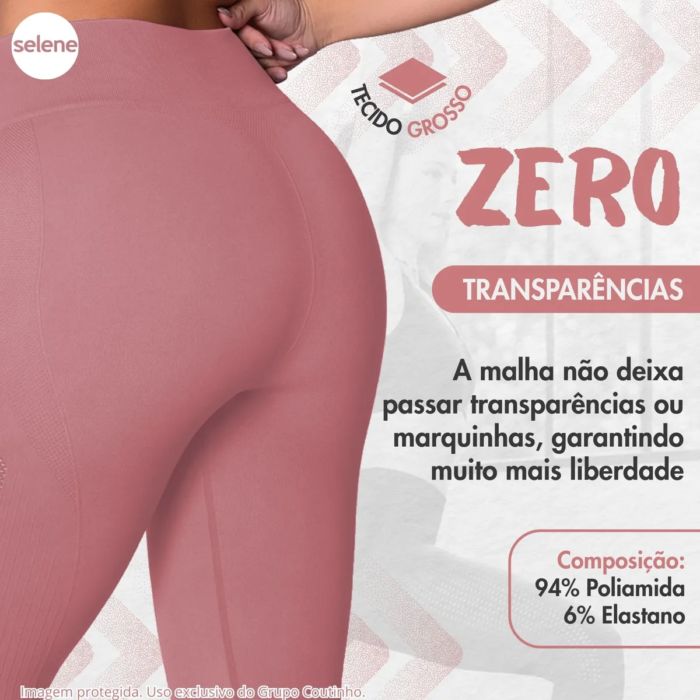

Calça Legging Fitness Zero Transparência: A Revolução do Conforto e Segurança 2026
Por Equipe AchadoCerto.VIP | Análise Completa da Legging Selene Cintura Alta — Zero Transparência, Tecido Grosso e Sem Costura | Janeiro 2026
Se você é mulher e treina na academia, já viveu aquele desconforto silencioso de se preocupar com transparência durante o agachamento, supino ou flexão. Em 2026, isso não precisa ser mais um problema. A legging fitness Selene com zero transparência chegou para mudar o jogo — e aqui no AchadoCerto.VIP a gente explica por quê.
🔥 Segurança Total + Conforto Premium = A Legging que a Academia Pediu!O que Torna a Legging Selene Diferente? Os 3 Pilares
1️⃣ Zero Transparência — A Segurança Que Você Merecia
A palavra-chave aqui é confiança. A legging Selene foi desenvolvida com um tecido especial que literalmente não deixa nada à vista — nem mesmo quando você está em posições desafiadoras como agachamento, stiff ou levantamento terra.
Por que isso importa? A maioria das leggings normais de academia causam ansiedade:
- Você se preocupa se alguém pode ver
- Evita certos exercícios por insegurança
- Treina tensa, não 100% focada
- Precisa usar uma second skin ou moletom o tempo todo
Com a Selene Zero Transparência? Você coloca, treina, e esquece dessa preocupação.
2️⃣ Tecido Grosso — Durabilidade + Sustentação
O tecido grosso da Selene não é acidental — é estratégico. Um tecido fino nas coxas pode se desgastar rápido, criar "bolas" (pilling) e perder a forma. A Selene resiste:
- Mais lavagens: Sem aderir ao corpo como plástico
- Melhor sustentação: Não deixa "marcas" desconfortáveis
- Controle de movinento: O tecido não sobe quando você se move
- Durabilidade: Treino atrás de treino, mantém a forma
3️⃣ Sem Costura — Conforto Máximo, Sem Arranhões
As costuras laterais tradicionais? Esquece. A legging Selene usa tecnologia de fabricação sem costura que elimina:
- Fricção durante o treino
- Marcas desconfortáveis nas laterais e virilha
- Irritação de pele depois de treinos longos
- Aquela sensação de "aperto" que atrapalha a performance
Comparativo: Por Que Selene Vence as Leggings Comuns?
| Característica | Legging Selene (Zero Transparência) | Leggings Comuns de Academia |
|---|---|---|
| Transparência | ✓ Zero Transparência | ✗ Transparente em posições |
| Tecido | ✓ Grosso + Durável | ✗ Fino + Desgasta Rápido |
| Costura | ✓ Sem Costura | ✗ Com Costuras Laterais |
| Conforto | ✓ Sem Marcas ou Aperto | ✗ Marca a Pele |
| Durabilidade | ✓ +300 Lavagens | ✗ ~100 Lavagens |
| Cintura Alta | ✓ Sustentação Extra | ✗ Sobe Durante Treino |
| Segurança Psicológica | ✓ 100% Confiante | ✗ Preocupação Constante |
| Preço Acessível? | ✓ Melhor Custo-Benefício | ✗ Mais Caro Pro Resultado |

Cores e Tamanhos Disponíveis
A legging Selene vem em opções variadas para combinar com seu estilo:
- Preto: O clássico que combina com tudo
- Cinza Chumbo: Elegante e discreto
- Verde Militar: Para quem quer destacar
- Azul Marinho: Sofisticação pura
- Tamanhos: XP até G (inclusivo para todas!)
Depoimentos de Quem Já Comprou
"Finalmente não preciso mais usar shorts por cima! Treino com total segurança." — Mariana, São Paulo
"A durabilidade é incrível. Lavo toda semana e continua perfeita após 8 meses." — Juliana, Rio de Janeiro
"Sem costura = sem irritação. Meu melhor investimento para a academia em 2025." — Carol, Brasília
Por Que Escolher Agora?
- ✅ Zero Transparência: Treina com confiança total
- ✅ Tecido Grosso: Durável e confortável por anos
- ✅ Sem Costura: Sem incômodo, sem marcas, sem distração
- ✅ Cintura Alta: Sustentação completa durante treinos intensos
- ✅ Lavável: Mantém qualidade após múltiplas lavagens
- ✅ Custo-Benefício: Investe uma vez, usa por anos
Conclusão: O Investimento Que Vale a Pena
A legging fitness Selene com zero transparência, tecido grosso e sem costura não é só uma roupa — é uma solução para um dos incômodos silenciosos da mulher que treina. Se você já passou por essa preocupação, já sabe:
Conforto psicológico + Conforto físico = Performance 100%
Clique no link abaixo e garanta a sua. A academia (e seus agachamentos) te agradece!
🎯 A Legging Zero Transparência Que A Academia Pediu
Selene Cintura Alta — Zero Transparência • Tecido Grosso • Sem Costura • Segurança Total para Treinos Intensos
VER OFERTA NO MERCADO LIVRELoja Oficial | Garantia Total | Frete Grátis | Avaliação 4.9⭐
Não perca nenhum achado! Receba ofertas de fitness em tempo real: